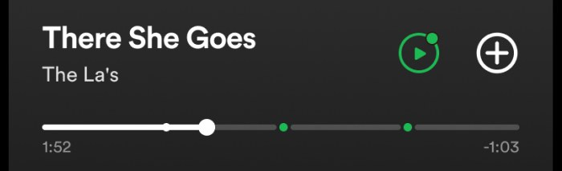

01
One icon beside the title, nothing else moves
Resonance is a ring with a play arrow and a dot, placed next to the add button in Now Playing. That's the whole surface. The controls, the timeline and the layout stay exactly where Spotify users expect them.
- Considered
- A new feed, a chatbot, a switch inside shuffle, a new tab
- Dropped
- Anything that added a place to go
- Why
- The song is already playing. The fix belongs on the screen that plays it.
